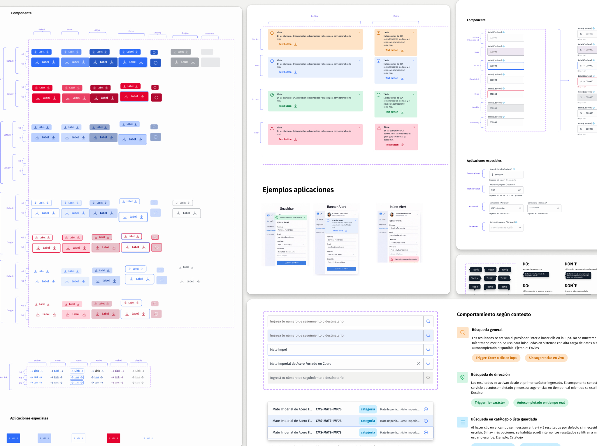
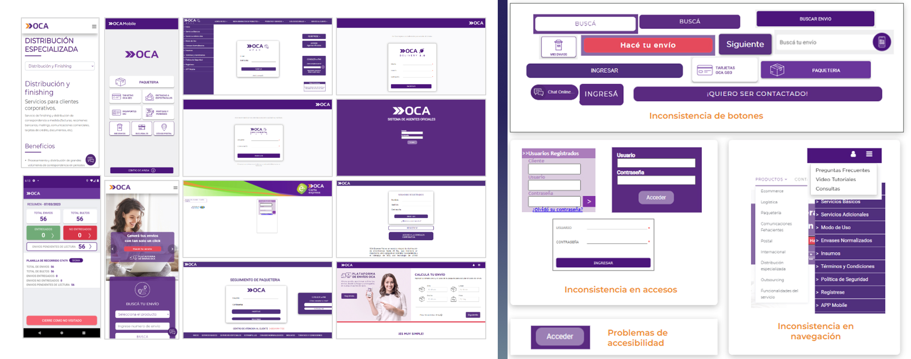
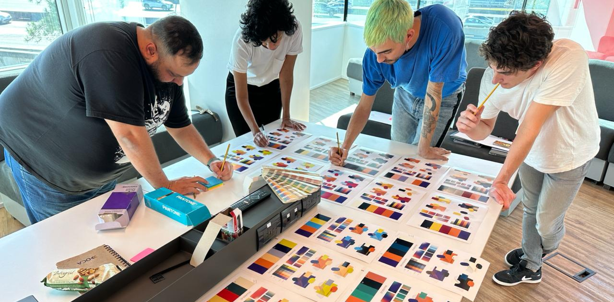
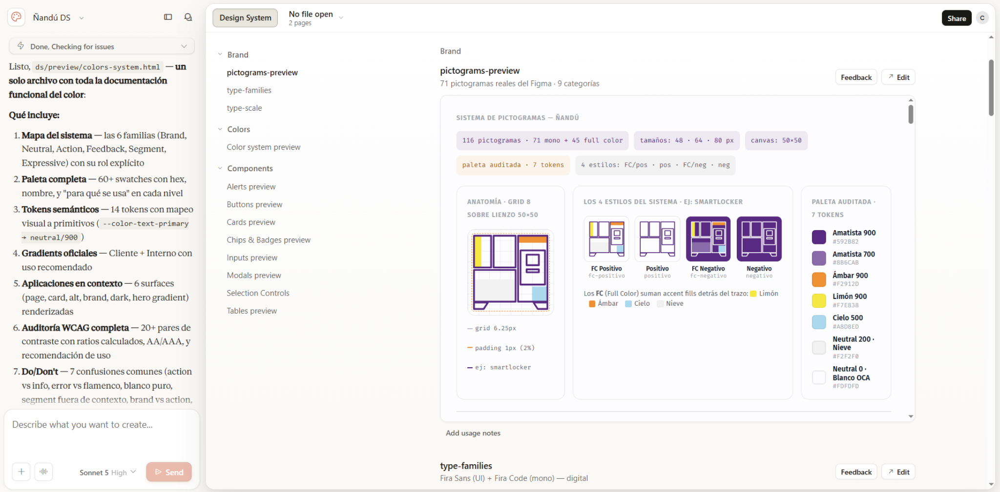

OCA tenía múltiples productos en marcha simultáneamente, cada uno con sus propias decisiones de diseño. Ñandú es la infraestructura compartida — tokens, componentes y criterios — que construí para unificarlos sin frenar a los equipos.

Cuando me incorporé a OCA no existía una herramienta de diseño compartida como Figma ni un Design System que unificara criterios. ePak, OMS, Backoffice y otras plataformas se habían desarrollado en distintos momentos, por equipos distintos, cada uno con sus propias decisiones.
Las diferencias iban más allá de la interfaz: componentes, tipografías, colores, iconografía, patrones de interacción y hasta la forma de comunicar acciones y mensajes al usuario. Cada nuevo proyecto volvía a resolver problemas que otros equipos ya habían enfrentado.
Empecé el proyecto como Product Designer. Como equipo sabíamos que faltaba un Design System, pero fui quien insistió en priorizarlo, ponerle nombre y darle estructura — y terminé liderando su construcción.

Necesitábamos crear un sistema que ayudara a tomar decisiones de diseño de forma consistente, facilitara la colaboración entre Diseño y Desarrollo y acompañara el crecimiento del ecosistema digital de OCA.
El desafío era encontrar el equilibrio entre estandarizar lo necesario y mantener la flexibilidad suficiente para que cada producto pudiera evolucionar según sus necesidades.
Construir el design system mientras los productos ya estaban en producción implicó un equilibrio constante: avanzar sin romper lo que ya funcionaba, y hacerlo con un equipo que tenía otras prioridades activas.
Junto al equipo de Diseño definimos el nombre, la personalidad y la identidad visual del sistema hasta llegar a Ñandú.
Elegimos el nombre por lo que representa: el ñandú es un ave nativa de nuestro territorio, veloz y de movimiento constante — una imagen que conecta directamente con la idea de un sistema vivo, en evolución. La letra Ñ, además, refuerza el carácter argentino y federal de OCA, una empresa con presencia en todo el país.
Trabajé este proceso junto con Branding: definimos nombre, colores, tipografía y recursos gráficos que luego empezaron a usarse también en piezas institucionales y de comunicación, fortaleciendo una identidad visual consistente dentro de la organización.

Definimos foundations como color, tipografía, espaciado, iconografía y reglas de composición, que dieron lugar a 33 componentes de interfaz documentados — cada uno con sus propios estados y variantes, no solo una librería genérica de botones e inputs.
Cada decisión buscó reducir trabajo repetitivo y permitir que los equipos concentraran su tiempo en resolver problemas de producto, en lugar de volver a diseñar los mismos elementos una y otra vez.
Cada nuevo producto sirvió para validar componentes existentes, detectar nuevos patrones o incorporar mejoras al sistema.
ePak fue el primer producto en adoptar el sistema de forma integral y, después, OMS, Backoffice y otros proyectos empezaron a reutilizar sus componentes y patrones, consolidando un lenguaje común entre equipos. Hoy 4 productos digitales de OCA — ePak, OMS, Backoffice Comercial y Comunicaciones — operan sobre los mismos tokens y componentes base.
El Design System evolucionaba junto con los productos. Los productos también fortalecían al Design System.
Documentamos componentes, patrones, reglas de uso y buenas prácticas para que cualquier diseñador o desarrollador pudiera entender cuándo utilizar cada solución y mantener la consistencia entre productos.
Ñandú dejó de ser una biblioteca de Figma para convertirse en una fuente de verdad compartida entre Diseño, Desarrollo y Producto — hoy, un 40% de la biblioteca sigue en expansión activa: un núcleo estable de componentes ya consolidados conviviendo con partes del sistema que evolucionan junto con las necesidades de cada producto nuevo.
Como parte de la evolución del sistema, estructuré Ñandú en Claude Design, lo que permite consultar componentes, patrones y reglas mediante lenguaje natural.
Esta representación facilita mantener el sistema actualizado, compartir conocimiento entre equipos y explorar nuevas formas de integrar asistentes de IA dentro del proceso de diseño y desarrollo.
Más que una copia del Design System, Claude Design funciona como una capa de conocimiento sobre Ñandú, preparada para flujos de trabajo asistidos por IA.

Los equipos parten de componentes ya documentados en lugar de definir cada elemento desde cero en cada producto nuevo.
Corrección de problemas de accesibilidad heredados de las plataformas anteriores: tamaños de texto ilegibles, bajo contraste, wordings inconsistentes y componentes con fallas funcionales.
Consiste en construir un sistema de decisiones que permita que los productos evolucionen de forma consistente, incluso cuando cambian los equipos, las prioridades y las necesidades del negocio.
Trabajar en Ñandú me permitió entender que un Design System genera valor cuando conecta personas, procesos y tecnología, y cuando se convierte en una herramienta que ayuda a toda la organización a diseñar mejor.